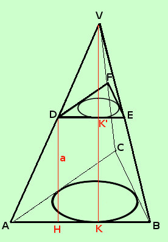

|
 Mostriamo prima che tutti i trapezi laterali del tronco di piramide derivante da una piramide retta hanno la stessa altezza (d'ora in avanti quando parleremo di tronco di piramide, se non espressamente indicato, intenderemo un tronco derivante da una piramide retta) Consideriamo la piramide completa VABC: allora, essendo retta, essa avra' tutte le misure delle altezze delle facce laterali (apoteme delle facce triangolari) uguali In figura ho segnato solamente l'altezza VK della faccia VAB, ma le tre altezze delle facce laterali sono congruenti Pero' saranno uguali anche le misure delle altezze delle facce laterali della piramideVDEF che ha come basebase la base minore del tronco di piramide In figura ho segnato solamente l'altezza VK' della faccia VDE, ma le tre altezze delle facce laterali sono congruenti Avremo che vale DH = K'K = VK - VK' e quindi, per differenza, potremo dire che le facce laterali (trapezi) del tronco di piramide hanno altezze congruenti Troviamo la formula per calcolare la superficie laterale di un tronco di piramide retto qualunque Sappiamo che l'area di un trapezio e' dato dalla semisomma delle basi moltiplicata per l'altezza Chiamo i lati del perimetro della base maggiore l1, l2, l3, ... Chiamo i lati del perimetro della base minore m1, m2, m3, ... Chiamo l'altezza comune a Ho quindi Asl = ( l1 + m1 )/2 · a + ( l2 + m2 )/2 · a + ( l3 + m3 )/2 · a + ..... Metto in evidenza a/2 Asl = a/2 · [(l1 + m1) + (l2 + m2) + (l3 + m3) +.....] Faccio cadere le parentesi tonde Asl = a/2 · [l1 + m1 + l2 + m2 + l3 + m3 +.....] Adresso raccolgo fra loro i lati della base maggiore ed i lati della base minore Asl = a/2 · [(l1 + l2 + l3....) + (m1 + m2 + m3 +....)] Quindi dentro le parentesi tonde ho i perimetri 2pB e 2pb delle basi maggiore e minore Asl = a/2 · (2pB + 2pb)] Raccolgo il 2 dentro parentesi e poi lo semplifico con il 2 al denominatore Asl = a/2 · 2(pB + pb) = a·(pB + pb) |